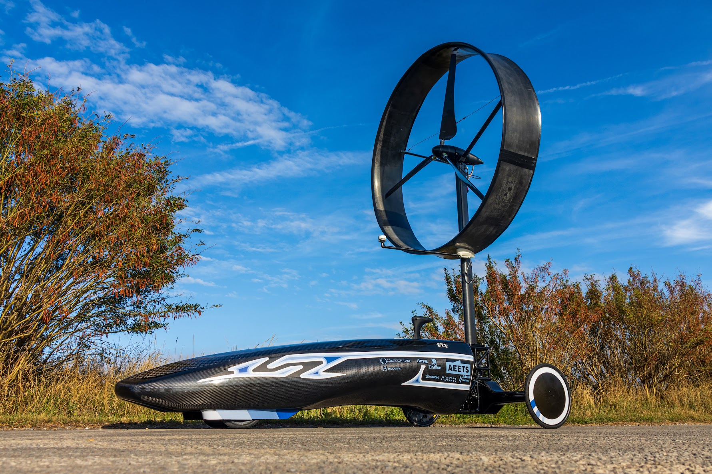

Le Club Chinook rassemble des étudiants de l'ÉTS qui conçoivent et construisent un véhicule propulsé uniquement par le vent. Les pales entraînent un rotor, et l'énergie passe par un arbre et une transmission à variation continue (NuVinci) jusqu'aux deux essieux arrière.
L'électronique embarquée, développée par l'équipe, enregistre les mesures de chaque course : vitesse du véhicule et du vent, régime du rotor, angle des pales, rapport de transmission, rendement… ChinookRuns sert à importer ces enregistrements, à les conserver dans une base de données et à les analyser.

Choisis une course enregistrée, ou ouvre un fichier de la carte SD (.xlsx ou .csv).
Visualisation en temps réel via les antennes LoRa.
Pas encore disponible. Cette page sera activée quand les antennes seront installées.